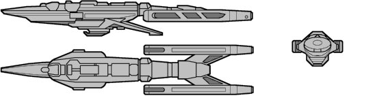

Scorpion-class Corvette (UFP)

Battle Stats
Engines and Superstructure
Total Power Units - 20 (Warp Drive - 2x8, Impulse - 4)
MPR - 4/3
Superstructure - 8
Maximum Warp - 1
Beam Weapons (Phasers)
Max Power - 3
Firing Chart - N
Arcs - 2F/P, 2F/S
Bonuses - +2(1-7) +1(8-13)
Missile Weapons (Photon Torpedoes)
Power to Arm - 1
Damage - 8
Firing Chart - D
Arcs - 1F
Deflector Shields
Max Shield Power - 9
SPR - 1/3